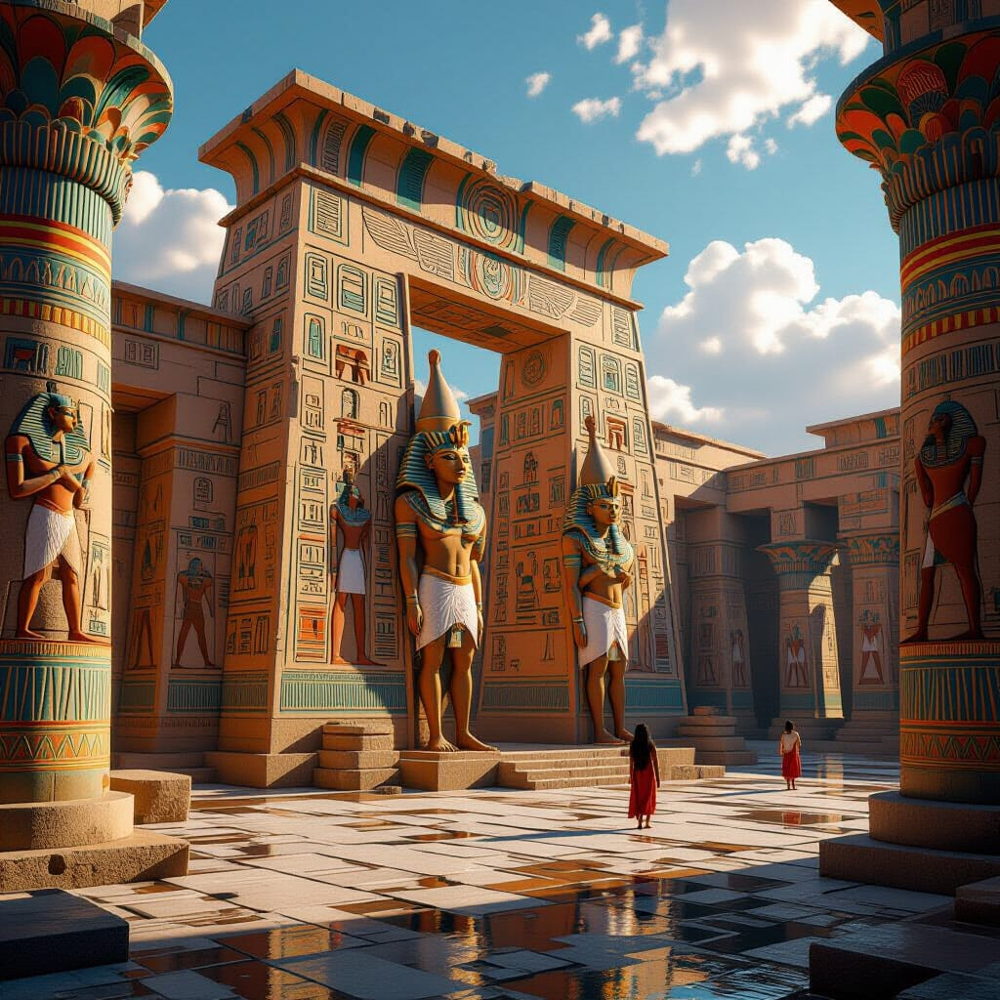
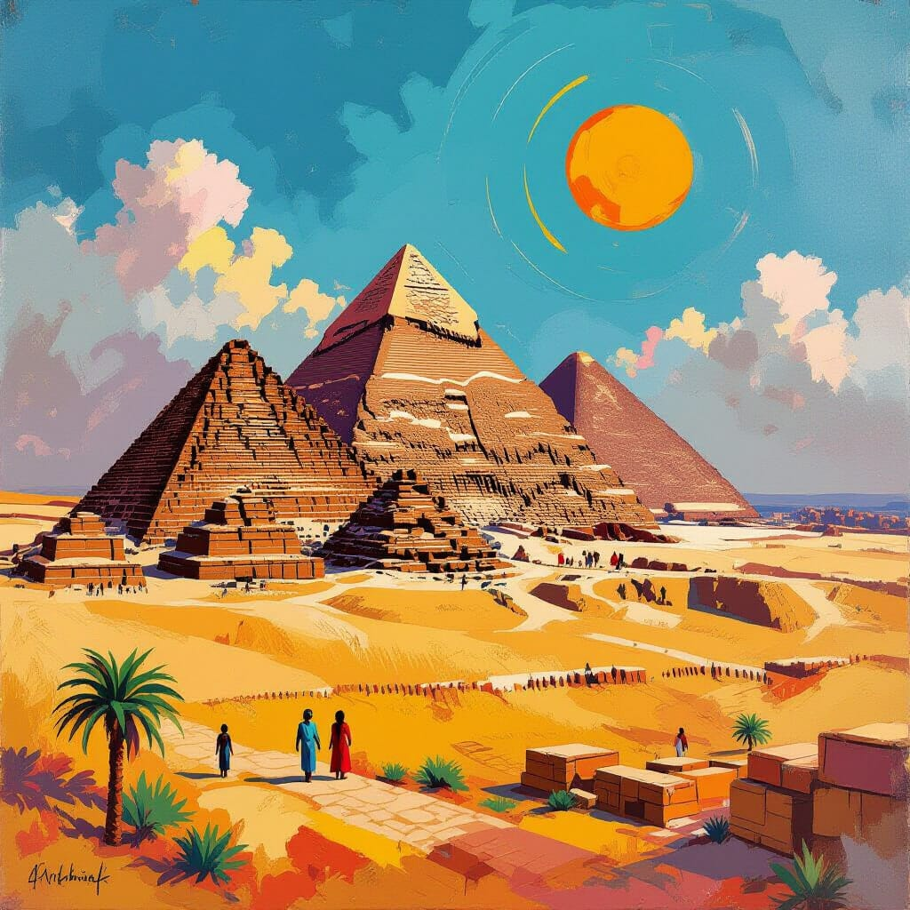

Featured Highlights



Plan Your Visit
Peek behind the scenes: meet the team on our Staff page and browse highlights in the Collections.
A fictitious museum for coursework. Explore staff profiles and our archaeology & anthropology collections. Some content/images were generated with AI and edited by a human.
Peek behind the scenes: meet the team on our Staff page and browse highlights in the Collections.